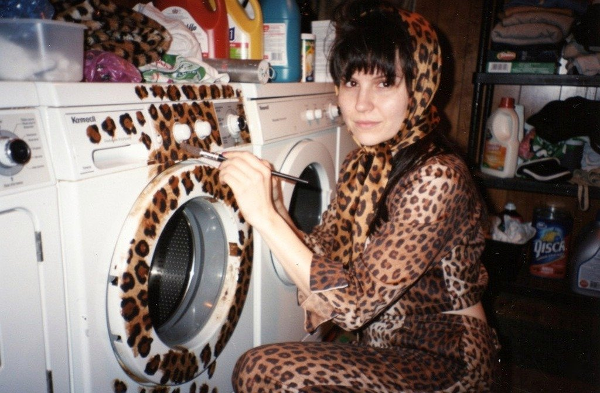
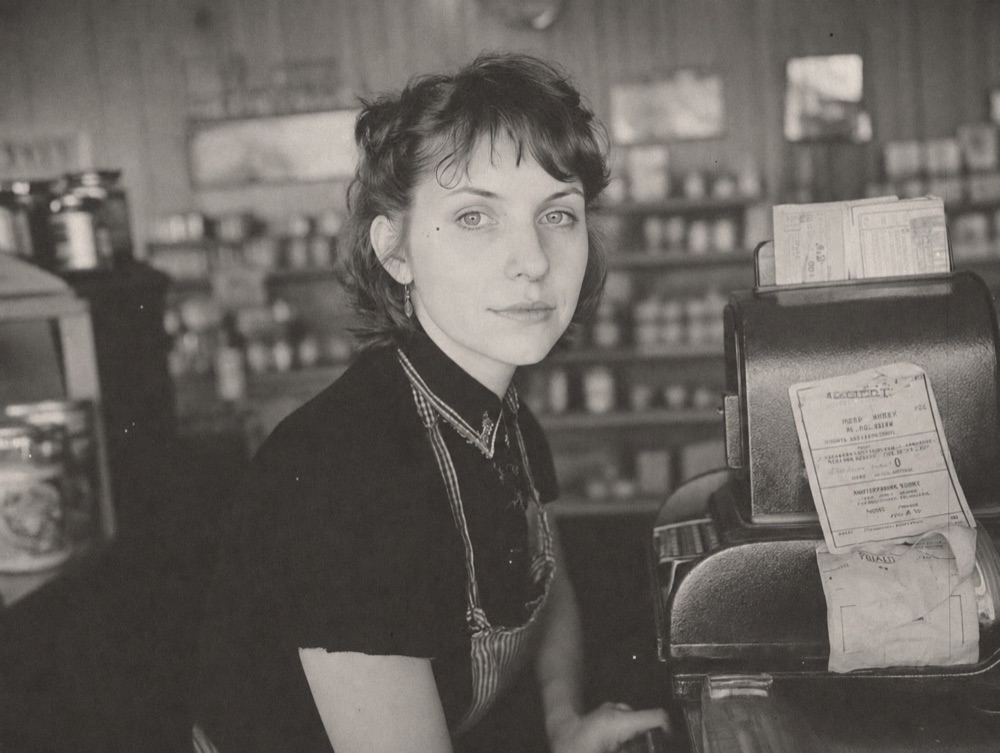
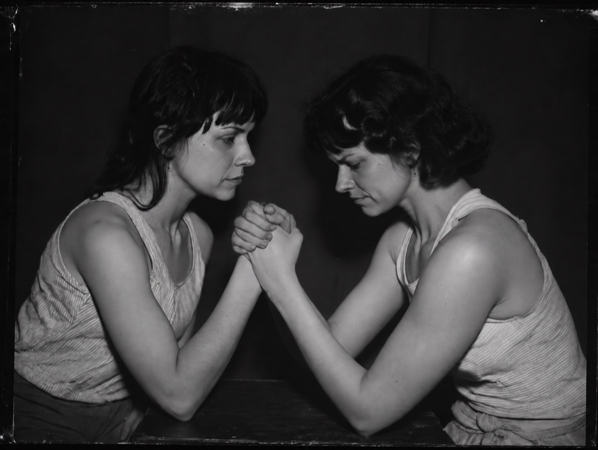

New Mercy
The photo archive of a town that doesn’t exist. Its records office publishes holdings like any small-town archive: council meetings, church events, culverts, a pump house. Every person in every photograph is the same woman, and nobody in town can tell.
Each resident is a part of me grown into a whole person: the motorcycle rider, the one who wished she’d been godly, the film worker, the sober ex-addict. It’s about not being able to get away from yourself, and the lives we could have lived but didn’t. The images are AI-generated because that is what the tool natively does: make plausible people who never existed.
Visit the archive →